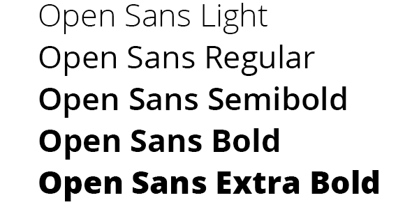

Oficina de Turismo de Cádiz

Tipografia
Open Sans es una fuente sans-serif altamente apreciada en el diseño web y gráfico. Diseñada por Steve Matteson y desarrollada por Google, destaca por su legibilidad excepcional tanto en tamaños grandes como pequeños, lo que la hace ideal para el contenido principal de una página web.
Esta fuente es conocida por su versatilidad y su estilo moderno y limpio que le da un toque contemporáneo a cualquier diseño. Puede adaptarse a una amplia variedad de estilos y proyectos, desde sitios corporativos hasta blogs personales.
Open Sans también ofrece un amplio soporte de idiomas y caracteres especiales, lo que la convierte en una elección sólida para sitios web con audiencias internacionales. Además, es de código abierto y está disponible de forma gratuita a través de Google Fonts, lo que la hace accesible para diseñadores y desarrolladores.
En resumen, Open Sans es una fuente sans-serif que combina legibilidad, versatilidad y estilo moderno, convirtiéndola en una opción destacada para proyectos de diseño web, incluida una página web para la oficina de turismo de Cádiz.
